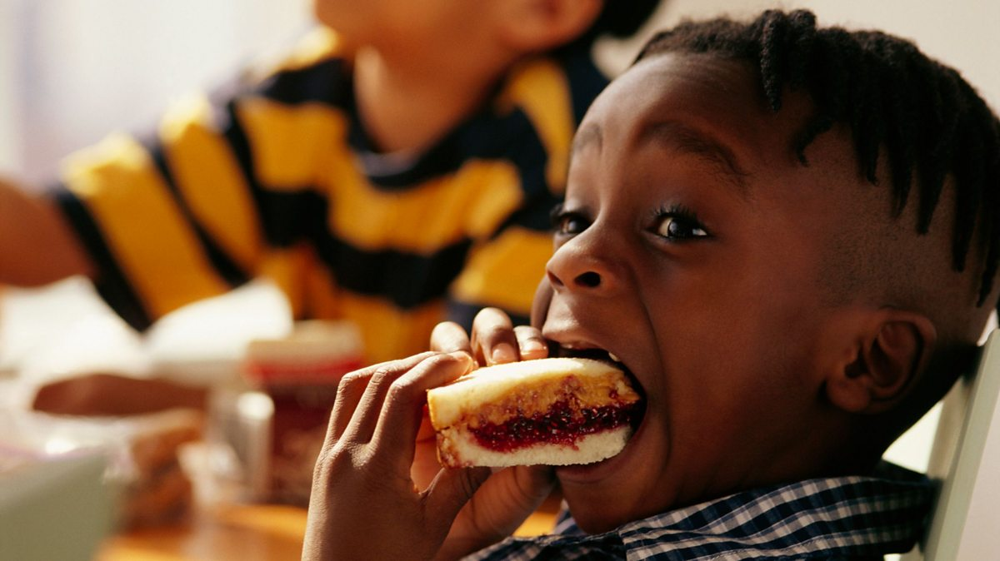

PB & J (Peanut Butter & Jelly)

Now this is EPIC! IT'S PEANUT BUTTER JELLY! PEANUT BUTTER JELLY!
The famous sandwich that ended racism between nuts and berries. It's a snack that you have from
dusk til dawn, for lunch when you're in middle school through end of life. Let's learn how to make it!
Ingredients:
- Peanut Butter. Creamy or Crunchy to choose from!
- 2 slices of Sliced Loaf Bread. You can also do it the hard way by slicing your own bread. If you do this though,
be warned: you will be a pretentous jerk...
- Jelly (or "Jam") Strawberry, Grape, Blueberry...it "verries"
Procedure:
- Place your 2 slices of bread horizontally mirrored (side-by-side long ways). Note: You can also placed them down vertically mirrored.
- Take a butter knife and use it to scoop and spread Peanut butter on the left side sliced bread.
- Clean your knife. do NOT forget this step!
- Take the same butter knife and use it to scoop and spread Jelly onto the right side sliced bread.
Can you guess why we cleaned the knife?
SO YOU DON'T UNWANTEDLY MIX YOUR PEANUT BUTTER INTO YOUR JELLY ONLY
JAR!
- Finally, unite the sliced bread covered with peanut butter with the slice bread on the right.
Note: Make sure that the sides with peanut butter and jelly combine. I made the mistake of screwing this step up, and it was very messy on me fingers...
Bon Appetit!
Return to Homepage